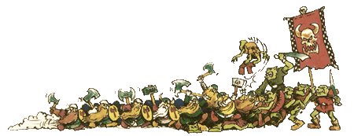

| |
Új
járatok és szobák Warhammer Questhez

Biztos,
hogy néha eleged van abból, hogy a minotaurusz
kamrája, amit az elõbb vágott le a csapatotok,
érdekes módon pont ugyanúgy néz ki, mint az elõzõ
kaland goblin hadurának a barlangja. Az itt leírtakkal
szeretnék segíteni azokon a Warhammer Quest játékosokon,
akik már unják, hogy a katakombáik mindig ugyanúgy
nézek ki.
Az alapdobozban található
folyosók, szobák és célszobák, pár játékülés
alatt megunhatóak. Ezért most álljon itt,
hogyan kell otthon szobákat készíteni, amik ráadásul
szerintem még az eredetieknél is jobban néznek
ki. A módszer tulajdonképpen hasonló a tereptárgyaknál
leírtakkal, azzal a különbséggel, hogy itt a
dolgok külseje helyett, belsõ tereket ábrázolunk
falak nélkül.
1. Elsõ lépésben
gondold ki milyen szobát szeretnél létrehozni.
Nagyjából rajzold le, hogy hogyan is nézzen ki.
2. Ezután
egy megfelelõen vékony sík felületet vágj
formára, ez lesz a szoba alapja. Használj,
valami keményebb anyagot, hogy a terem ne törjön
ketté egy óvatlan mozdulattól. Ennek a mérete
megegyezik a szoba méretével. Vigyázz, hogy méretek
megfelelõek legyenek. Egy gyári szobán mérd le
mekkorának kell lenni egy négyzetnek a padlón
és eszerint járj el. Hagyj ki kb. egy centi szegélyt
minden oldalról.
Tehát, ha egy két négyzet széles folyosót
akarunk csinálni, akkor ennek a szélessége kábé
8 centi legyen (3 centi laponként, plusz 1-1
centi a szegélynek).
3. Majd kezd el
elkészíteni a padlólapokat. Ehhez hungarocellt
vagy bármilyen más, de lehetõleg könnyen vágható
anyagot, vékony, kb. 1 mm vastagságú lapokra vágunk
(mivel a szoba vastagsága nem haladhatja meg az
1-1,5 millimétert, hisz ellenkezõ esetben nem
tudjuk rájuk illeszteni az ajtókat). Ez nem könnyû,
de azért megoldható. Ezután a gyári padlólapok
lapjainak megfelelõ méretû lapokat vágunk belõlük.
Ez általában 3x3 centiméter. Ezután a sarkukat
néhol kicsit tépázzuk meg, hogy régi törött
padlólapok benyomását keltsék és ragasszuk rá
szépen az alapra, úgyhogy a széleket 1-1 centi
távolságban szabadon hagyjuk! Fontos, hogy a
padlólapok ne illeszkedjenek tökéletesen,
legyen legalább 1-2 mm hézag közöttük.
4. Ezután a szélsõ 1
centis szegélyre kéne felragasztunk a padlólapokkal
megegyezõ vastagságú sík felületet. Viszont
nem árt, ha ez egyetlen egységes darab. Ezt
viszont nehéz kivágni, így, ha esetleg nem
sikerül ne essünk kétségbe, nyugodtan
ragasszuk fel, a következõ lépés valószínûleg
elfedi majd az illesztéseket.
5. Most érdesíteni kell
a felületet, amit a már ismertetett papagájhomok
és jól kenhetõ ragasztó keveréke ad (tejbegríz
szerû massza). ezt kellene nagyon vékonyan
felvinni a modell felületére. ezáltal a padlólapok
és a szegély érdessé, kõszerûvé fog válni!
6. A kifestés van már csak hátra! Az
egészet fújjuk le alapozóval (ha valahol kilátszik
a hungarocell, oda kenjünk ragasztót, hogy sehol
ne érintkezzen közvetlenül az alapozóval, mert
szétmarja). Majd ha az alapozó megszáradt kenjünk
a lapok közti mélyedésekbe fekete vagy nagyon sötétszürke
festéket. Magukat a lapokat és a szegélyt szintén
sötétszürkével kell lekenni, a lényeg, hogy láthatólag
világosabb legyen, mint a résekben lévõ szín.
Most pedig szárazecset technikával vigyünk fel
fehér vagy világosszürke festéket a lapok felületére.
7. És ha nincs semmi más
a szobában akkor már csak csinosítgatás van hátra.
A nagyobb lapok közti hézagokba (például a
sarok lecsippentésével keletkezettbe) füvet szórhatunk.
Néhány fegyvert vagy csontvázkezet, fejet
ragaszthatunk fel a szobára és máris készen áll
a játékra!
A fent említett módszer csak egy alap
szoba elkészítését mutatja be minden plusz
elem nélkül, de természetesen emiatt még nem
kellene ezt a módszert használnunk. Éppen ezért
bonyolítsuk a szobát, benne található tárgyakkal:
kút, szobor, emelvény, oltár, szakadék, stb. a
lehetõségek határtalanok és szinte mindent ki
lehet faragni hungarocellbõl. És mondanom se
kell, mennyivel jobb egy olyan kazamatában
kalandozni, ahol a terepet nem csak 2D-s rajzok
szemléltetik, hanem teljes valóságukban ott
vannak a karakterek orra elõtt!
írta: Rincewind
|
|